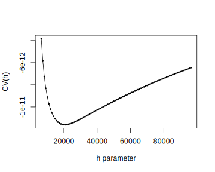
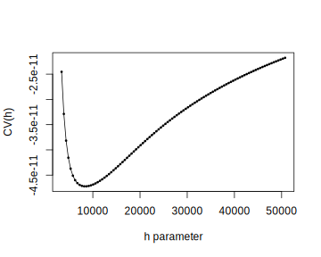
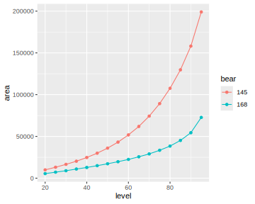
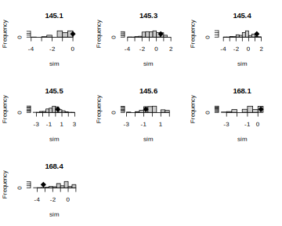
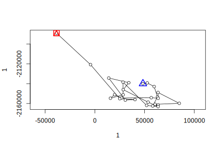
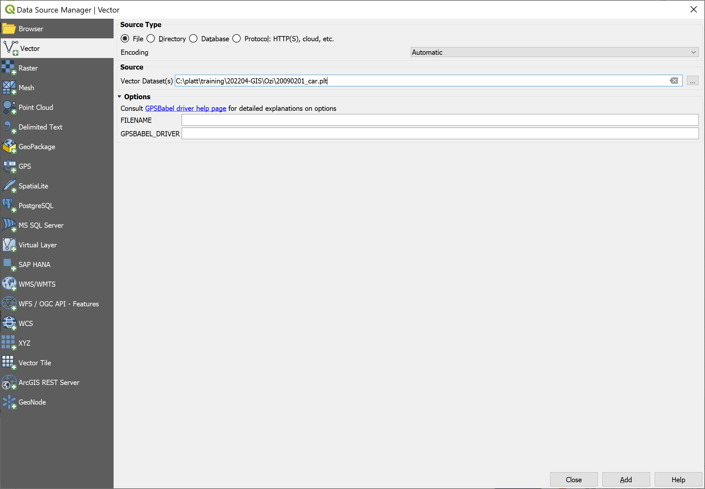

layout: true .banner[ .shorttitle[ [Часть2](#today2024) [ГИС аспирантура](break.html#home) ] ] --- class: metadata customtitle middle left giphy name: H32169 <iframe width='220' height='220' class='timenow' src='https://www.timeanddate.com/worldclock/fullscreen.html?n=1440' frameborder='0' allow='encrypted-media' allowfullscreen></iframe> .sidebar.left-column[ ## [Биотелеметрия](#H3ab0d) ## [GPS](#H74a34) ] .mainbar.right-column[ .author[Никита Платонов] .institute[с.н.с. ИПЭЭ РАН] .title[Пространственные данные: примеры и обработка] .subtitle[ГИС технологии в биологических исследованиях] .what[Занятие 06] .where[] .when[ .updated[Обновлено: 2024-03-25 15:05]] ] --- name: H3ab0d .sidebar.left-column[ ## [Биотелеметрия](#H3ab0d).fg[].bg[] ### [.small[Подготовка данных]](#H783e6) ### [Участки обитания](#H9c255) ### [Анализ траекторий](#ltraj) ## [GPS](#H74a34) ] .mainbar.right-column[ Локации белого медведя <a name=cite-Durner2019_data></a>([Durner, 2019](#bib)). <iframe src="https://doi.org/10.5066%2FP9ZRJ3XU" width="1330" height="350" data-external="1"></iframe> ```r remote <- "https://alaska.usgs.gov/data/polarBear/polarBear_satelliteTelemetry_distribution_HabitatSelection_beaufortChukchi_1985_2016/polarBear_satelliteTelemetry_distribution_HabitatSelection_beaufortChukchi_Durner_1985_2016_metadata.zip" local <- tempfile() download.file(remote,local,mode="wb") list1 <- unzip(local,exdir=tempdir()) fname <- list1[grep("kernelUD",basename(list1))] file.remove(list1) ``` ```r fname ``` ``` [1] "C:\\TEMP\\RtmpUVjGCK/polarBear_satelliteTelemetry_kernelUD_beaufortChukchi_Durner_1985_2016.csv" ``` ] --- name: H783e6 .sidebar.left-column[ ## [Биотелеметрия](#H3ab0d).fg[] ### [.small[Подготовка данных]](#H783e6) <span class="bullet bullet-active">[•](#H783e6)</span><span class="bullet mslide6m">[•](#H357b5)</span><span class="bullet mslide7m">[•](#H427c6)</span><span class="bullet mslide8m">[•](#Hd2c37)</span><span class="bullet mslide9m">[•](#Ha5c44)</span>.fg[].bg[] ### [Участки обитания](#H9c255) ### [Анализ траекторий](#ltraj) ## [GPS](#H74a34) ] .mainbar.right-column[ .oversize[ ```r require(sf) ``` ``` Loading required package: sf ``` ``` Linking to GEOS 3.11.2, GDAL 3.7.2, PROJ 9.3.0; sf_use_s2() is TRUE ``` ```r require(ggplot2) ``` ``` Loading required package: ggplot2 ``` ```r require(adehabitatHR) ``` ``` Loading required package: adehabitatHR ``` ``` Loading required package: sp ``` ``` Loading required package: ade4 ``` ``` Loading required package: adehabitatMA ``` ``` Registered S3 methods overwritten by 'adehabitatMA': method from print.SpatialPixelsDataFrame sp print.SpatialPixels sp ``` ``` Loading required package: adehabitatLT ``` ``` Loading required package: CircStats ``` ``` Loading required package: MASS ``` ``` Loading required package: boot ``` ] ] --- name: H357b5 .sidebar.left-column[ ## [Биотелеметрия](#H3ab0d).fg[] ### [.small[Подготовка данных]](#H783e6) <span class="bullet bullet">[•](#H783e6)</span><span class="bullet bullet-active">[•](#H357b5)</span><span class="bullet mslide7m">[•](#H427c6)</span><span class="bullet mslide8m">[•](#Hd2c37)</span><span class="bullet mslide9m">[•](#Ha5c44)</span>.fg[].bg[] ### [Участки обитания](#H9c255) ### [Анализ траекторий](#ltraj) ## [GPS](#H74a34) ] .mainbar.right-column[ ```r src <- read.csv(fname) tail(src) ``` ``` BearID_ud DateTimeUTC_ud latitude_ud longitude_ud season period 21613 255 5/23/2010 21:49 70.981 -146.952 max 716 21614 255 5/27/2010 18:12 70.992 -146.340 max 716 21615 255 5/30/2010 18:41 70.815 -145.721 max 716 21616 255 6/2/2010 20:09 70.689 -143.814 max 716 21617 255 6/5/2010 20:12 71.729 -146.236 max 716 21618 255 6/8/2010 21:11 72.548 -145.328 max 716 ``` ```r src$period <- sprintf("%04d",src$period) src$group <- paste0(src$season,":",src$period) tail(src) ``` ``` BearID_ud DateTimeUTC_ud latitude_ud longitude_ud season period group 21613 255 5/23/2010 21:49 70.981 -146.952 max 0716 max:0716 21614 255 5/27/2010 18:12 70.992 -146.340 max 0716 max:0716 21615 255 5/30/2010 18:41 70.815 -145.721 max 0716 max:0716 21616 255 6/2/2010 20:09 70.689 -143.814 max 0716 max:0716 21617 255 6/5/2010 20:12 71.729 -146.236 max 0716 max:0716 21618 255 6/8/2010 21:11 72.548 -145.328 max 0716 max:0716 ``` ] --- name: H427c6 .sidebar.left-column[ ## [Биотелеметрия](#H3ab0d).fg[] ### [.small[Подготовка данных]](#H783e6) <span class="bullet bullet">[•](#H783e6)</span><span class="bullet bullet">[•](#H357b5)</span><span class="bullet bullet-active">[•](#H427c6)</span><span class="bullet mslide8m">[•](#Hd2c37)</span><span class="bullet mslide9m">[•](#Ha5c44)</span>.fg[].bg[] ### [Участки обитания](#H9c255) ### [Анализ траекторий](#ltraj) ## [GPS](#H74a34) ] .mainbar.right-column[ ```r (loc <- sf::st_as_sf(src,coords=c("longitude_ud","latitude_ud"),crs=4326)) ``` ``` Simple feature collection with 21618 features and 5 fields Geometry type: POINT Dimension: XY Bounding box: xmin: -179.967 ymin: 63.8911 xmax: 179.998 ymax: 82.22576 Geodetic CRS: WGS 84 First 10 features: BearID_ud DateTimeUTC_ud season period group geometry 1 196 5/2/1992 22:00 max 8595 max:8595 POINT (-125.103 73.985) 2 196 5/11/1992 0:43 max 8595 max:8595 POINT (-125.262 74.398) 3 196 5/17/1992 22:19 max 8595 max:8595 POINT (-123.282 74.458) 4 196 5/23/1992 23:27 max 8595 max:8595 POINT (-125.084 73.983) 5 182 5/2/1986 17:57 max 8595 max:8595 POINT (-137.429 69.353) 6 182 5/12/1986 0:46 max 8595 max:8595 POINT (-138.622 69.735) 7 182 5/26/1986 18:51 max 8595 max:8595 POINT (-139.31 69.73) 8 182 6/2/1986 0:19 mlt 8595 mlt:8595 POINT (-139.165 69.839) 9 182 6/7/1986 19:53 mlt 8595 mlt:8595 POINT (-138.242 69.717) 10 182 6/23/1986 0:38 mlt 8595 mlt:8595 POINT (-141.019 69.72) ``` ```r sf::st_crs(loc)$epsg ``` ``` [1] 4326 ``` ] --- name: Hd2c37 .sidebar.left-column[ ## [Биотелеметрия](#H3ab0d).fg[] ### [.small[Подготовка данных]](#H783e6) <span class="bullet bullet">[•](#H783e6)</span><span class="bullet bullet">[•](#H357b5)</span><span class="bullet bullet">[•](#H427c6)</span><span class="bullet bullet-active">[•](#Hd2c37)</span><span class="bullet mslide9m">[•](#Ha5c44)</span>.fg[].bg[] ### [Участки обитания](#H9c255) ### [Анализ траекторий](#ltraj) ## [GPS](#H74a34) ] .mainbar.right-column[ Cохранение всех данных в формате ГИС ```r if (!dir.exists("data")) dir.create("data") dst <- "data/locations_for_kernelUD.geojson" sf::st_write(loc,dsn=dst,delete_layer=file.exists(dst),delete_dsn=file.exists(dst)) ``` ] --- name: Ha5c44 .sidebar.left-column[ ## [Биотелеметрия](#H3ab0d).fg[] ### [.small[Подготовка данных]](#H783e6) <span class="bullet bullet">[•](#H783e6)</span><span class="bullet bullet">[•](#H357b5)</span><span class="bullet bullet">[•](#H427c6)</span><span class="bullet bullet">[•](#Hd2c37)</span><span class="bullet bullet-active">[•](#Ha5c44)</span>.fg[].bg[] ### [Участки обитания](#H9c255) ### [Анализ траекторий](#ltraj) ## [GPS](#H74a34) ] .mainbar.right-column[ ```r loc <- loc[loc$group %in% c("max:0716"),] ta <- table(loc$BearID_ud) ta <- ta[ta>150] ## 120 ta ``` ``` 145 168 155 183 ``` ```r loc <- loc[loc$BearID_ud %in% names(ta),] table(loc$BearID_ud) ``` ``` 145 168 155 183 ``` Сохранение части данных ```r if (!dir.exists("data")) dir.create("data") dst <- "data/locations_for_ltraj.geojson" sf::st_write(loc,dsn=dst,delete_layer=file.exists(dst),delete_dsn=file.exists(dst)) ``` ] --- name: H9c255 .sidebar.left-column[ ## [Биотелеметрия](#H3ab0d).fg[] ### [.small[Подготовка данных]](#H783e6) ### [Участки обитания](#H9c255).fg[] #### [Формирование сетки](#H9c255) <span class="bullet bullet-active">[•](#H9c255)</span><span class="bullet mslide13m">[•](#H508a2)</span><span class="bullet mslide14m">[•](#Hceeeb)</span>.fg[].bg[] #### [Построение кёрнел](#H895f3) #### [Площади по уровням](#Hce72a) #### [Извлечение уровней](#H27d96) #### [Визуализация](#H9b224) ### [Анализ траекторий](#ltraj) ## [GPS](#H74a34) ] .mainbar.right-column[ .font90[ ```r (loc <- sf::st_transform(loc,3572)) ``` ``` Simple feature collection with 338 features and 5 fields Geometry type: POINT Dimension: XY Bounding box: xmin: -88920.86 ymin: -2211301 xmax: 733452.4 ymax: -1455791 Projected CRS: WGS 84 / North Pole LAEA Alaska First 10 features: BearID_ud DateTimeUTC_ud season period group 17462 145 5/14/2008 3:54 max 0716 max:0716 17463 145 5/18/2008 20:14 max 0716 max:0716 17464 145 5/21/2008 21:32 max 0716 max:0716 17465 145 5/27/2008 18:08 max 0716 max:0716 17466 145 5/30/2008 18:29 max 0716 max:0716 17467 145 6/2/2008 18:37 max 0716 max:0716 17468 145 6/5/2008 20:03 max 0716 max:0716 17469 145 6/8/2008 20:16 max 0716 max:0716 17470 145 6/11/2008 21:29 max 0716 max:0716 17471 145 6/17/2008 19:01 max 0716 max:0716 geometry 17462 POINT (208385.1 -2172907) 17463 POINT (219304.5 -2105274) 17464 POINT (199755 -2080243) 17465 POINT (183527.7 -2054768) 17466 POINT (190180.1 -2042328) 17467 POINT (191254.4 -2033488) 17468 POINT (144390 -2001121) 17469 POINT (142381 -2013417) 17470 POINT (104305.1 -2028877) 17471 POINT (146107.4 -1997239) ``` ] ] --- name: H508a2 .sidebar.left-column[ ## [Биотелеметрия](#H3ab0d).fg[] ### [.small[Подготовка данных]](#H783e6) ### [Участки обитания](#H9c255).fg[] #### [Формирование сетки](#H9c255) <span class="bullet bullet">[•](#H9c255)</span><span class="bullet bullet-active">[•](#H508a2)</span><span class="bullet mslide14m">[•](#Hceeeb)</span>.fg[].bg[] #### [Построение кёрнел](#H895f3) #### [Площади по уровням](#Hce72a) #### [Извлечение уровней](#H27d96) #### [Визуализация](#H9b224) ### [Анализ траекторий](#ltraj) ## [GPS](#H74a34) ] .mainbar.right-column[ ```r sf::st_crs(loc)$epsg ``` ``` [1] 3572 ``` ```r sf::st_crs(loc)$proj4string ``` ``` [1] "+proj=laea +lat_0=90 +lon_0=-150 +x_0=0 +y_0=0 +datum=WGS84 +units=m +no_defs" ``` ```r bbox <- sf::st_bbox(loc) bbox ``` ``` xmin ymin xmax ymax -88920.86 -2211300.60 733452.40 -1455790.58 ``` ```r bbox <- sf::st_as_sfc(bbox) |> sf::st_buffer(500*1e3) |> sf::st_bbox() bbox ``` ``` xmin ymin xmax ymax -588920.9 -2711300.6 1233452.4 -955790.6 ``` ] --- name: Hceeeb .sidebar.left-column[ ## [Биотелеметрия](#H3ab0d).fg[] ### [.small[Подготовка данных]](#H783e6) ### [Участки обитания](#H9c255).fg[] #### [Формирование сетки](#H9c255) <span class="bullet bullet">[•](#H9c255)</span><span class="bullet bullet">[•](#H508a2)</span><span class="bullet bullet-active">[•](#Hceeeb)</span>.fg[].bg[] #### [Построение кёрнел](#H895f3) #### [Площади по уровням](#Hce72a) #### [Извлечение уровней](#H27d96) #### [Визуализация](#H9b224) ### [Анализ траекторий](#ltraj) ## [GPS](#H74a34) ] .mainbar.right-column[ ```r gr <- sf::st_make_grid(bbox,cellsize=12000,what="centers") str(gr) ``` ``` sfc_POINT of length 22344; first list element: 'XY' num [1:2] -582921 -2705301 ``` ```r gr <- sf::as_Spatial(gr) ``` ```r str(gr) ``` ``` Formal class 'SpatialPoints' [package "sp"] with 3 slots ..@ coords : num [1:22344, 1:2] -582921 -570921 -558921 -546921 -534921 ... .. ..- attr(*, "dimnames")=List of 2 .. .. ..$ : NULL .. .. ..$ : chr [1:2] "coords.x1" "coords.x2" ..@ bbox : num [1:2, 1:2] -582921 -2705301 1229079 -953301 .. ..- attr(*, "dimnames")=List of 2 .. .. ..$ : chr [1:2] "coords.x1" "coords.x2" .. .. ..$ : chr [1:2] "min" "max" ..@ proj4string:Formal class 'CRS' [package "sp"] with 1 slot .. .. ..@ projargs: chr "+proj=laea +lat_0=90 +lon_0=-150 +x_0=0 +y_0=0 +datum=WGS84 +units=m +no_defs" .. .. ..$ comment: chr "| __truncated__" ``` ```r sp::gridded(gr) <- TRUE ``` ] --- name: H895f3 .sidebar.left-column[ ## [Биотелеметрия](#H3ab0d).fg[] ### [.small[Подготовка данных]](#H783e6) ### [Участки обитания](#H9c255).fg[] #### [Формирование сетки](#H9c255) #### [Построение кёрнел](#H895f3) <span class="bullet bullet-active">[•](#H895f3)</span><span class="bullet mslide16m">[•](#H20e0d)</span>.fg[].bg[] #### [Площади по уровням](#Hce72a) #### [Извлечение уровней](#H27d96) #### [Визуализация](#H9b224) ### [Анализ траекторий](#ltraj) ## [GPS](#H74a34) ] .mainbar.right-column[ Пример построения кёрнел с параметром `h="LSCV"` ```r ud <- adehabitatHR::kernelUD(sf::as_Spatial(loc["BearID_ud"]) ,grid=gr ,h=list("href","LSCV",30000)[[2]] ) ``` .pull-left[ ```r adehabitatHR::plotLSCV(ud[[1]]) ```  ] .pull-right[ ```r adehabitatHR::plotLSCV(ud[[2]]) ```  ] ] --- name: H20e0d .sidebar.left-column[ ## [Биотелеметрия](#H3ab0d).fg[] ### [.small[Подготовка данных]](#H783e6) ### [Участки обитания](#H9c255).fg[] #### [Формирование сетки](#H9c255) #### [Построение кёрнел](#H895f3) <span class="bullet bullet">[•](#H895f3)</span><span class="bullet bullet-active">[•](#H20e0d)</span>.fg[].bg[] #### [Площади по уровням](#Hce72a) #### [Извлечение уровней](#H27d96) #### [Визуализация](#H9b224) ### [Анализ траекторий](#ltraj) ## [GPS](#H74a34) ] .mainbar.right-column[ .oversize[ ```r ud <- adehabitatHR::kernelUD(sf::as_Spatial(loc["BearID_ud"]) ,grid=gr ,h=list("href","LSCV",30000)[[3]] ) ``` ```r str(ud) ``` ``` List of 2 $ 145:Formal class 'estUD' [package "adehabitatHR"] with 9 slots .. ..@ h :List of 2 .. .. ..$ h : num 30000 .. .. ..$ meth: chr "specified" .. ..@ vol : logi FALSE .. ..@ data :'data.frame': 22344 obs. of 1 variable: .. .. ..$ ud: num [1:22344] 0 0 0 0 0 0 0 0 0 0 ... .. ..@ coords.nrs : num(0) .. ..@ grid :Formal class 'GridTopology' [package "sp"] with 3 slots .. .. .. ..@ cellcentre.offset: Named num [1:2] -582921 -2705301 .. .. .. .. ..- attr(*, "names")= chr [1:2] "Var2" "Var1" .. .. .. ..@ cellsize : Named num [1:2] 12000 12000 .. .. .. .. ..- attr(*, "names")= chr [1:2] "Var2" "Var1" .. .. .. ..@ cells.dim : Named int [1:2] 152 147 .. .. .. .. ..- attr(*, "names")= chr [1:2] "Var2" "Var1" .. ..@ grid.index : int [1:22344] 1 153 305 457 609 761 913 1065 1217 1369 ... .. ..@ coords : num [1:22344, 1:2] -582921 -582921 -582921 -582921 -582921 ... .. .. ..- attr(*, "dimnames")=List of 2 .. .. .. ..$ : NULL .. .. .. ..$ : chr [1:2] "Var2" "Var1" .. ..@ bbox : num [1:2, 1:2] -588921 -2711301 1235079 -947301 .. .. ..- attr(*, "dimnames")=List of 2 .. .. .. ..$ : chr [1:2] "Var2" "Var1" .. .. .. ..$ : chr [1:2] "min" "max" .. ..@ proj4string:Formal class 'CRS' [package "sp"] with 1 slot .. .. .. ..@ projargs: chr "+proj=laea +lat_0=90 +lon_0=-150 +x_0=0 +y_0=0 +datum=WGS84 +units=m +no_defs" .. .. .. ..$ comment: chr "| __truncated__" $ 168:Formal class 'estUD' [package "adehabitatHR"] with 9 slots .. ..@ h :List of 2 .. .. ..$ h : num 30000 .. .. ..$ meth: chr "specified" .. ..@ vol : logi FALSE .. ..@ data :'data.frame': 22344 obs. of 1 variable: .. .. ..$ ud: num [1:22344] 0 0 0 0 0 0 0 0 0 0 ... .. ..@ coords.nrs : num(0) .. ..@ grid :Formal class 'GridTopology' [package "sp"] with 3 slots .. .. .. ..@ cellcentre.offset: Named num [1:2] -582921 -2705301 .. .. .. .. ..- attr(*, "names")= chr [1:2] "Var2" "Var1" .. .. .. ..@ cellsize : Named num [1:2] 12000 12000 .. .. .. .. ..- attr(*, "names")= chr [1:2] "Var2" "Var1" .. .. .. ..@ cells.dim : Named int [1:2] 152 147 .. .. .. .. ..- attr(*, "names")= chr [1:2] "Var2" "Var1" .. ..@ grid.index : int [1:22344] 1 153 305 457 609 761 913 1065 1217 1369 ... .. ..@ coords : num [1:22344, 1:2] -582921 -582921 -582921 -582921 -582921 ... .. .. ..- attr(*, "dimnames")=List of 2 .. .. .. ..$ : NULL .. .. .. ..$ : chr [1:2] "Var2" "Var1" .. ..@ bbox : num [1:2, 1:2] -588921 -2711301 1235079 -947301 .. .. ..- attr(*, "dimnames")=List of 2 .. .. .. ..$ : chr [1:2] "Var2" "Var1" .. .. .. ..$ : chr [1:2] "min" "max" .. ..@ proj4string:Formal class 'CRS' [package "sp"] with 1 slot .. .. .. ..@ projargs: chr "+proj=laea +lat_0=90 +lon_0=-150 +x_0=0 +y_0=0 +datum=WGS84 +units=m +no_defs" .. .. .. ..$ comment: chr "| __truncated__" - attr(*, "class")= chr "estUDm" ``` ] ] --- name: Hce72a .sidebar.left-column[ ## [Биотелеметрия](#H3ab0d).fg[] ### [.small[Подготовка данных]](#H783e6) ### [Участки обитания](#H9c255).fg[] #### [Формирование сетки](#H9c255) #### [Построение кёрнел](#H895f3) #### [Площади по уровням](#Hce72a) <span class="bullet bullet-active">[•](#Hce72a)</span><span class="bullet mslide18m">[•](#Hc758f)</span><span class="bullet mslide19m">[•](#Hb05fc)</span>.fg[].bg[] #### [Извлечение уровней](#H27d96) #### [Визуализация](#H9b224) ### [Анализ траекторий](#ltraj) ## [GPS](#H74a34) ] .mainbar.right-column[ .dummy[ ```r ka <- adehabitatHR::kernel.area(ud,unin="m",unout="km2") colnames(ka) <- names(ud) knitr::kable(rbind(head(ka,4),tail(ka,4)),row.names=TRUE) ``` | | 145| 168| |:--|------:|-----:| |20 | 9936| 5472| |25 | 13104| 7200| |30 | 16560| 8928| |35 | 20304| 10944| |80 | 107568| 38448| |85 | 129744| 45216| |90 | 158112| 54432| |95 | 199008| 72720| ] ] --- name: Hc758f .sidebar.left-column[ ## [Биотелеметрия](#H3ab0d).fg[] ### [.small[Подготовка данных]](#H783e6) ### [Участки обитания](#H9c255).fg[] #### [Формирование сетки](#H9c255) #### [Построение кёрнел](#H895f3) #### [Площади по уровням](#Hce72a) <span class="bullet bullet">[•](#Hce72a)</span><span class="bullet bullet-active">[•](#Hc758f)</span><span class="bullet mslide19m">[•](#Hb05fc)</span>.fg[].bg[] #### [Извлечение уровней](#H27d96) #### [Визуализация](#H9b224) ### [Анализ траекторий](#ltraj) ## [GPS](#H74a34) ] .mainbar.right-column[ ```r ta <- reshape(ka,direction="long" ,varying=list(grep("^\\d+",colnames(ka),value=TRUE)) ,times=grep("^\\d+",colnames(ka),value=TRUE) ,v.names="area" ,timevar="bear" ,ids=row.names(ka) ,idvar="level" ) ta$level <- as.numeric(ta$level) knitr::kable(rbind(head(ta,4),tail(ta,4)),row.names=FALSE) ``` |bear | area| level| |:----|-----:|-----:| |145 | 9936| 20| |145 | 13104| 25| |145 | 16560| 30| |145 | 20304| 35| |168 | 38448| 80| |168 | 45216| 85| |168 | 54432| 90| |168 | 72720| 95| ] --- name: Hb05fc .sidebar.left-column[ ## [Биотелеметрия](#H3ab0d).fg[] ### [.small[Подготовка данных]](#H783e6) ### [Участки обитания](#H9c255).fg[] #### [Формирование сетки](#H9c255) #### [Построение кёрнел](#H895f3) #### [Площади по уровням](#Hce72a) <span class="bullet bullet">[•](#Hce72a)</span><span class="bullet bullet">[•](#Hc758f)</span><span class="bullet bullet-active">[•](#Hb05fc)</span>.fg[].bg[] #### [Извлечение уровней](#H27d96) #### [Визуализация](#H9b224) ### [Анализ траекторий](#ltraj) ## [GPS](#H74a34) ] .mainbar.right-column[ ```r (p1 <- ggplot(ta,aes(level,area,colour=bear))+geom_line()+geom_point()) ```  ] --- name: H27d96 .sidebar.left-column[ ## [Биотелеметрия](#H3ab0d).fg[] ### [.small[Подготовка данных]](#H783e6) ### [Участки обитания](#H9c255).fg[] #### [Формирование сетки](#H9c255) #### [Построение кёрнел](#H895f3) #### [Площади по уровням](#Hce72a) #### [Извлечение уровней](#H27d96) <span class="bullet bullet-active">[•](#H27d96)</span><span class="bullet mslide21m">[•](#H95a91)</span>.fg[].bg[] #### [Визуализация](#H9b224) ### [Анализ траекторий](#ltraj) ## [GPS](#H74a34) ] .mainbar.right-column[ .font95[ ```r levHR <- c(95,50) hr <- lapply(ud,function(U) { hr2 <- lapply(levHR,function(L) { hr3 <- adehabitatHR::getverticeshr(U,percent=L,unin="m",unout="km2") hr3$level <- L sf::st_as_sf(hr3) }) do.call(rbind,hr2) }) hr <- lapply(names(hr),function(x) {hr[[x]]$id <- x;hr[[x]]}) hr <- do.call(rbind,hr) ``` Экспорт ```r if (!dir.exists("data")) dir.create("data") dst <- "data/hr.geojson" sf::st_write(sf::st_transform(hr,4326) ,dsn=dst ,delete_layer=file.exists(dst) ,delete_dsn=file.exists(dst) ) ``` ] ] --- name: H95a91 .sidebar.left-column[ ## [Биотелеметрия](#H3ab0d).fg[] ### [.small[Подготовка данных]](#H783e6) ### [Участки обитания](#H9c255).fg[] #### [Формирование сетки](#H9c255) #### [Построение кёрнел](#H895f3) #### [Площади по уровням](#Hce72a) #### [Извлечение уровней](#H27d96) <span class="bullet bullet">[•](#H27d96)</span><span class="bullet bullet-active">[•](#H95a91)</span>.fg[].bg[] #### [Визуализация](#H9b224) ### [Анализ траекторий](#ltraj) ## [GPS](#H74a34) ] .mainbar.right-column[ ```r hr ``` ``` Simple feature collection with 4 features and 3 fields Geometry type: GEOMETRY Dimension: XY Bounding box: xmin: -109626 ymin: -2254479 xmax: 779252.1 ymax: -1438563 Projected CRS: +proj=laea +lat_0=90 +lon_0=-150 +x_0=0 +y_0=0 +datum=WGS84 +units=m +no_defs id area level geometry homerange 145 200163.21 95 MULTIPOLYGON (((-108821 -20... homerange1 145 35748.68 50 POLYGON ((437079.1 -2107065... homerange2 168 73098.40 95 POLYGON ((-90920.86 -210402... homerange11 168 17253.45 50 POLYGON ((-6920.856 -214782... ``` ] --- name: H9b224 .sidebar.left-column[ ## [Биотелеметрия](#H3ab0d).fg[] ### [.small[Подготовка данных]](#H783e6) ### [Участки обитания](#H9c255).fg[] #### [Формирование сетки](#H9c255) #### [Построение кёрнел](#H895f3) #### [Площади по уровням](#Hce72a) #### [Извлечение уровней](#H27d96) #### [Визуализация](#H9b224) <span class="bullet bullet-active">[•](#H9b224)</span><span class="bullet mslide23m">[•](#H7ba77)</span>.fg[].bg[] ### [Анализ траекторий](#ltraj) ## [GPS](#H74a34) ] .mainbar.right-column[ ```r plot(hr) ``` <img src="assets/lesson06/plothr1-1.svg" width="1330" height="568" style="display: block; margin: auto;" /> ] --- name: H7ba77 .sidebar.left-column[ ## [Биотелеметрия](#H3ab0d).fg[] ### [.small[Подготовка данных]](#H783e6) ### [Участки обитания](#H9c255).fg[] #### [Формирование сетки](#H9c255) #### [Построение кёрнел](#H895f3) #### [Площади по уровням](#Hce72a) #### [Извлечение уровней](#H27d96) #### [Визуализация](#H9b224) <span class="bullet bullet">[•](#H9b224)</span><span class="bullet bullet-active">[•](#H7ba77)</span>.fg[].bg[] ### [Анализ траекторий](#ltraj) ## [GPS](#H74a34) ] .mainbar.right-column[ ```r plot(hr[order(hr$level),]) ``` <img src="assets/lesson06/plothr2-1.svg" width="1330" height="568" style="display: block; margin: auto;" /> ] --- name: ltraj .sidebar.left-column[ ## [Биотелеметрия](#H3ab0d).fg[] ### [.small[Подготовка данных]](#H783e6) ### [Участки обитания](#H9c255) ### [Анализ траекторий](#ltraj).fg[] #### [Построение траекторий](#ltraj) <span class="bullet bullet-active">[•](#ltraj)</span><span class="bullet mslide26m">[•](#H0bcd8)</span><span class="bullet mslide27m">[•](#H7ccab)</span><span class="bullet mslide28m">[•](#Hec75a)</span><span class="bullet mslide29m">[•](#H9b729)</span>.fg[].bg[] #### [Преобразования](#H84b73) #### [Подтраектории](#Hc9d10) #### [Регулярность](#H41706) #### [Шаги](#data-lt6) #### [Визуализация](#H8112d) #### [Гомогенность поведения](#He8f55) ## [GPS](#H74a34) ] .mainbar.right-column[ .oversize[ + Анализ траектории: пакет **`adehabitatLT`** + Манипуляция с пространственными данными: пакет **`sf`** + Визуализация (интерактивная): пакет **`mapview`** ```r Sys.setenv(TZ="UTC") require(mapview) ``` ``` Loading required package: mapview ``` ```r require(sf) require(adehabitatLT) ``` ] ] --- name: H0bcd8 .sidebar.left-column[ ## [Биотелеметрия](#H3ab0d).fg[] ### [.small[Подготовка данных]](#H783e6) ### [Участки обитания](#H9c255) ### [Анализ траекторий](#ltraj).fg[] #### [Построение траекторий](#ltraj) <span class="bullet bullet">[•](#ltraj)</span><span class="bullet bullet-active">[•](#H0bcd8)</span><span class="bullet mslide27m">[•](#H7ccab)</span><span class="bullet mslide28m">[•](#Hec75a)</span><span class="bullet mslide29m">[•](#H9b729)</span>.fg[].bg[] #### [Преобразования](#H84b73) #### [Подтраектории](#Hc9d10) #### [Регулярность](#H41706) #### [Шаги](#data-lt6) #### [Визуализация](#H8112d) #### [Гомогенность поведения](#He8f55) ## [GPS](#H74a34) ] .mainbar.right-column[ ```r loc <- st_read("data/locations_for_ltraj.geojson") |> st_transform(3572) ``` ``` Reading layer `locations_for_ltraj' from data source `data\locations_for_ltraj.geojson' using driver `GeoJSON' Simple feature collection with 338 features and 5 fields Geometry type: POINT Dimension: XY Bounding box: xmin: -152.516 ymin: 69.8789 xmax: -128.911 ymax: 75.993 Geodetic CRS: WGS 84 ``` ] --- name: H7ccab .sidebar.left-column[ ## [Биотелеметрия](#H3ab0d).fg[] ### [.small[Подготовка данных]](#H783e6) ### [Участки обитания](#H9c255) ### [Анализ траекторий](#ltraj).fg[] #### [Построение траекторий](#ltraj) <span class="bullet bullet">[•](#ltraj)</span><span class="bullet bullet">[•](#H0bcd8)</span><span class="bullet bullet-active">[•](#H7ccab)</span><span class="bullet mslide28m">[•](#Hec75a)</span><span class="bullet mslide29m">[•](#H9b729)</span>.fg[].bg[] #### [Преобразования](#H84b73) #### [Подтраектории](#Hc9d10) #### [Регулярность](#H41706) #### [Шаги](#data-lt6) #### [Визуализация](#H8112d) #### [Гомогенность поведения](#He8f55) ## [GPS](#H74a34) ] .mainbar.right-column[ .oversize[ ```r loc$DateTimeUTC_ud <- as.POSIXct(loc$DateTimeUTC_ud ,format="%m/%d/%Y %H:%M" ,tz=Sys.getenv("TZ")) loc ``` ``` Simple feature collection with 338 features and 5 fields Geometry type: POINT Dimension: XY Bounding box: xmin: -88920.86 ymin: -2211301 xmax: 733452.4 ymax: -1455791 Projected CRS: WGS 84 / North Pole LAEA Alaska First 10 features: BearID_ud DateTimeUTC_ud season period group 1 145 2008-05-14 03:54:00 max 0716 max:0716 2 145 2008-05-18 20:14:00 max 0716 max:0716 3 145 2008-05-21 21:32:00 max 0716 max:0716 4 145 2008-05-27 18:08:00 max 0716 max:0716 5 145 2008-05-30 18:29:00 max 0716 max:0716 6 145 2008-06-02 18:37:00 max 0716 max:0716 7 145 2008-06-05 20:03:00 max 0716 max:0716 8 145 2008-06-08 20:16:00 max 0716 max:0716 9 145 2008-06-11 21:29:00 max 0716 max:0716 10 145 2008-06-17 19:01:00 max 0716 max:0716 geometry 1 POINT (208385.1 -2172907) 2 POINT (219304.5 -2105274) 3 POINT (199755 -2080243) 4 POINT (183527.7 -2054768) 5 POINT (190180.1 -2042328) 6 POINT (191254.4 -2033488) 7 POINT (144390 -2001121) 8 POINT (142381 -2013417) 9 POINT (104305.1 -2028877) 10 POINT (146107.4 -1997239) ``` ] ] --- name: Hec75a .sidebar.left-column[ ## [Биотелеметрия](#H3ab0d).fg[] ### [.small[Подготовка данных]](#H783e6) ### [Участки обитания](#H9c255) ### [Анализ траекторий](#ltraj).fg[] #### [Построение траекторий](#ltraj) <span class="bullet bullet">[•](#ltraj)</span><span class="bullet bullet">[•](#H0bcd8)</span><span class="bullet bullet">[•](#H7ccab)</span><span class="bullet bullet-active">[•](#Hec75a)</span><span class="bullet mslide29m">[•](#H9b729)</span>.fg[].bg[] #### [Преобразования](#H84b73) #### [Подтраектории](#Hc9d10) #### [Регулярность](#H41706) #### [Шаги](#data-lt6) #### [Визуализация](#H8112d) #### [Гомогенность поведения](#He8f55) ## [GPS](#H74a34) ] .mainbar.right-column[ ```r lt1 <- as.ltraj(st_coordinates(loc) ,date=loc$DateTimeUTC_ud ,id=loc$BearID_ud ,proj4string=sp::CRS(st_crs(loc)$proj4string) ) names(lt1) <- sapply(lt1,function(x) attr(x,"id")) ``` ] --- name: H9b729 .sidebar.left-column[ ## [Биотелеметрия](#H3ab0d).fg[] ### [.small[Подготовка данных]](#H783e6) ### [Участки обитания](#H9c255) ### [Анализ траекторий](#ltraj).fg[] #### [Построение траекторий](#ltraj) <span class="bullet bullet">[•](#ltraj)</span><span class="bullet bullet">[•](#H0bcd8)</span><span class="bullet bullet">[•](#H7ccab)</span><span class="bullet bullet">[•](#Hec75a)</span><span class="bullet bullet-active">[•](#H9b729)</span>.fg[].bg[] #### [Преобразования](#H84b73) #### [Подтраектории](#Hc9d10) #### [Регулярность](#H41706) #### [Шаги](#data-lt6) #### [Визуализация](#H8112d) #### [Гомогенность поведения](#He8f55) ## [GPS](#H74a34) ] .mainbar.right-column[ ```r lt1 ``` ``` *********** List of class ltraj *********** Type of the traject: Type II (time recorded) * Time zone: UTC * Irregular traject. Variable time lag between two locs Characteristics of the bursts: id burst nb.reloc NAs date.begin date.end 145 145 145 155 0 2008-05-14 03:54:00 2012-05-15 18:27:00 168 168 168 183 0 2012-04-12 21:45:00 2015-05-30 04:00:00 infolocs provided. The following variables are available: [1] "pkey" ``` ] --- name: H84b73 .sidebar.left-column[ ## [Биотелеметрия](#H3ab0d).fg[] ### [.small[Подготовка данных]](#H783e6) ### [Участки обитания](#H9c255) ### [Анализ траекторий](#ltraj).fg[] #### [Построение траекторий](#ltraj) #### [Преобразования](#H84b73).fg[] ##### [в `data frame`](#H84b73).fg[].bg[] ##### [в `ltraj`](#H97c21) #### [Подтраектории](#Hc9d10) #### [Регулярность](#H41706) #### [Шаги](#data-lt6) #### [Визуализация](#H8112d) #### [Гомогенность поведения](#He8f55) ## [GPS](#H74a34) ] .mainbar.right-column[ ```r df1 <- ld(lt1) head(df1) ``` ``` x y date dx dy dist 145.1 208385.1 -2172907 2008-05-14 03:54:00 10919.387 67632.70 68508.504 145.2 219304.5 -2105274 2008-05-18 20:14:00 -19549.513 25031.27 31760.792 145.3 199755.0 -2080243 2008-05-21 21:32:00 -16227.265 25475.45 30204.681 145.4 183527.7 -2054768 2008-05-27 18:08:00 6652.395 12439.54 14106.617 145.5 190180.1 -2042328 2008-05-30 18:29:00 1074.327 8840.00 8905.043 145.6 191254.4 -2033488 2008-06-02 18:37:00 -46864.403 32366.86 56955.119 dt R2n abs.angle rel.angle id burst 145.1 404400 0 1.410726 NA 145 145 145.2 263880 4693415081 2.233846 0.82312004 145 145 145.3 506160 8661090144 2.137962 -0.09588465 145 145 145.4 260460 14574812280 1.079715 -1.05824674 145 145 145.5 259680 17382287790 1.449859 0.37014429 145 145 145.6 264360 19731107532 2.537170 1.08731086 145 145 pkey 145.1 145.2008-05-14 03:54:00 145.2 145.2008-05-18 20:14:00 145.3 145.2008-05-21 21:32:00 145.4 145.2008-05-27 18:08:00 145.5 145.2008-05-30 18:29:00 145.6 145.2008-06-02 18:37:00 ``` ] --- name: H97c21 .sidebar.left-column[ ## [Биотелеметрия](#H3ab0d).fg[] ### [.small[Подготовка данных]](#H783e6) ### [Участки обитания](#H9c255) ### [Анализ траекторий](#ltraj).fg[] #### [Построение траекторий](#ltraj) #### [Преобразования](#H84b73).fg[] ##### [в `data frame`](#H84b73) ##### [в `ltraj`](#H97c21).fg[].bg[] #### [Подтраектории](#Hc9d10) #### [Регулярность](#H41706) #### [Шаги](#data-lt6) #### [Визуализация](#H8112d) #### [Гомогенность поведения](#He8f55) ## [GPS](#H74a34) ] .mainbar.right-column[ ```r lt1 <- dl(df1) head(lt1) ``` ``` *********** List of class ltraj *********** Type of the traject: Type II (time recorded) * Time zone: UTC * Irregular traject. Variable time lag between two locs Characteristics of the bursts: id burst nb.reloc NAs date.begin date.end 1 145 145 155 0 2008-05-14 03:54:00 2012-05-15 18:27:00 2 168 168 183 0 2012-04-12 21:45:00 2015-05-30 04:00:00 infolocs provided. The following variables are available: [1] "pkey" ``` ```r (da <- adehabitatLT::summary.ltraj(lt1)) ``` ``` id burst nb.reloc NAs date.begin date.end 1 145 145 155 0 2008-05-14 03:54:00 2012-05-15 18:27:00 2 168 168 183 0 2012-04-12 21:45:00 2015-05-30 04:00:00 ``` ] --- name: Hc9d10 .sidebar.left-column[ ## [Биотелеметрия](#H3ab0d).fg[] ### [.small[Подготовка данных]](#H783e6) ### [Участки обитания](#H9c255) ### [Анализ траекторий](#ltraj).fg[] #### [Построение траекторий](#ltraj) #### [Преобразования](#H84b73) #### [Подтраектории](#Hc9d10).fg[].bg[] #### [Регулярность](#H41706) #### [Шаги](#data-lt6) #### [Визуализация](#H8112d) #### [Гомогенность поведения](#He8f55) ## [GPS](#H74a34) ] .mainbar.right-column[ Разбиение на отдельные сегменты по условию, если есть пропуск более 100 дней. ```r cond <- "dt>c(days=100)*c(hour=24)*c(min=60)*c(sec=60)" lt2 <- cutltraj(lt1,cond,nextr=TRUE) ``` ``` Warning in cutltraj(lt1, cond, nextr = TRUE): At least 3 relocations are needed for a burst 1 relocations have been deleted ``` ```r lt2 ``` ``` *********** List of class ltraj *********** Type of the traject: Type II (time recorded) * Time zone: UTC * Irregular traject. Variable time lag between two locs Characteristics of the bursts: id burst nb.reloc NAs date.begin date.end 1 145 145.1 12 0 2008-05-14 03:54:00 2008-06-26 18:57:00 2 145 145.3 27 0 2009-03-17 20:15:00 2009-06-30 18:29:00 3 145 145.4 63 0 2009-11-03 18:26:00 2010-06-28 18:58:00 4 145 145.5 47 0 2010-12-01 20:34:00 2011-06-29 16:51:00 5 145 145.6 5 0 2012-03-28 20:20:00 2012-05-15 18:27:00 6 168 168.1 26 0 2012-04-12 21:45:00 2012-06-30 10:00:00 7 168 168.2 79 0 2012-11-02 00:00:00 2013-06-28 14:17:00 8 168 168.3 27 0 2014-04-13 21:27:00 2014-06-30 22:00:00 9 168 168.4 51 0 2014-12-03 00:00:00 2015-05-30 04:00:00 infolocs provided. The following variables are available: [1] "pkey" ``` ] --- name: H41706 .sidebar.left-column[ ## [Биотелеметрия](#H3ab0d).fg[] ### [.small[Подготовка данных]](#H783e6) ### [Участки обитания](#H9c255) ### [Анализ траекторий](#ltraj).fg[] #### [Построение траекторий](#ltraj) #### [Преобразования](#H84b73) #### [Подтраектории](#Hc9d10) #### [Регулярность](#H41706) <span class="bullet bullet-active">[•](#H41706)</span><span class="bullet mslide36m">[•](#H12d6b)</span><span class="bullet mslide37m">[•](#name: data-lt4)</span>.fg[].bg[] ##### [Одинаковый период](#today2024) #### [Шаги](#data-lt6) #### [Визуализация](#H8112d) #### [Гомогенность поведения](#He8f55) ## [GPS](#H74a34) ] .mainbar.right-column[ Проверка на регулярность ```r is.regular(lt2) ``` ``` [1] FALSE ``` ```r summary(ld(lt1)$dt/3600/24) ``` ``` Min. 1st Qu. Median Mean 3rd Qu. Max. NA's 3.000 3.000 3.012 7.753 3.090 289.299 2 ``` Обратим внимание на медианное значение частоты локации: каждые три дня. ```r # plotltr(lt1,"dt/3600/24") ``` Установим точку отсчета ```r (refda <- as.POSIXct(strptime("12:00","%H:%M",tz=Sys.getenv("TZ")))) ``` ``` [1] "2024-03-25 12:00:00 UTC" ``` ] --- name: H12d6b .sidebar.left-column[ ## [Биотелеметрия](#H3ab0d).fg[] ### [.small[Подготовка данных]](#H783e6) ### [Участки обитания](#H9c255) ### [Анализ траекторий](#ltraj).fg[] #### [Построение траекторий](#ltraj) #### [Преобразования](#H84b73) #### [Подтраектории](#Hc9d10) #### [Регулярность](#H41706) <span class="bullet bullet">[•](#H41706)</span><span class="bullet bullet-active">[•](#H12d6b)</span><span class="bullet mslide37m">[•](#name: data-lt4)</span>.fg[].bg[] ##### [Одинаковый период](#today2024) #### [Шаги](#data-lt6) #### [Визуализация](#H8112d) #### [Гомогенность поведения](#He8f55) ## [GPS](#H74a34) ] .mainbar.right-column[ Заполним пропуски значениями `NA` ```r lt3 <- setNA(lt2,refda,3,units="day") lt3 ``` ``` *********** List of class ltraj *********** Type of the traject: Type II (time recorded) * Time zone: UTC * Irregular traject. Variable time lag between two locs Characteristics of the bursts: id burst nb.reloc NAs date.begin date.end 1 145 145.1 15 3 2008-05-14 03:54:00 2008-06-26 18:57:00 2 145 145.3 36 9 2009-03-17 20:15:00 2009-06-30 18:29:00 3 145 145.4 80 17 2009-11-03 18:26:00 2010-06-28 18:58:00 4 145 145.5 71 24 2010-12-01 20:34:00 2011-06-29 16:51:00 5 145 145.6 17 12 2012-03-28 20:20:00 2012-05-15 18:27:00 6 168 168.1 27 3 2012-04-12 21:45:00 2012-06-30 10:00:00 7 168 168.2 80 1 2012-11-02 00:00:00 2013-06-28 14:17:00 8 168 168.3 27 0 2014-04-13 21:27:00 2014-06-30 22:00:00 9 168 168.4 61 13 2014-12-03 00:00:00 2015-05-30 04:00:00 infolocs provided. The following variables are available: [1] "pkey" ``` ] --- name: data-lt4 .sidebar.left-column[ ## [Биотелеметрия](#H3ab0d).fg[] ### [.small[Подготовка данных]](#H783e6) ### [Участки обитания](#H9c255) ### [Анализ траекторий](#ltraj).fg[] #### [Построение траекторий](#ltraj) #### [Преобразования](#H84b73) #### [Подтраектории](#Hc9d10) #### [Регулярность](#H41706) <span class="bullet bullet">[•](#H41706)</span><span class="bullet bullet">[•](#H12d6b)</span><span class="bullet bullet-active">[•](#name: data-lt4)</span>.fg[].bg[] ##### [Одинаковый период](#today2024) #### [Шаги](#data-lt6) #### [Визуализация](#H8112d) #### [Гомогенность поведения](#He8f55) ## [GPS](#H74a34) ] .mainbar.right-column[ Приведение к единому шагу по времени. См. [визуализацию](#map-lt4). ```r lt4 <- sett0(lt3,refda,3,units="day") lt4 ``` ``` *********** List of class ltraj *********** Type of the traject: Type II (time recorded) * Time zone: UTC * Regular traject. Time lag between two locs: 259200 seconds Characteristics of the bursts: id burst nb.reloc NAs date.begin date.end 1 145 145.1 15 3 2008-05-15 12:00:00 2008-06-26 12:00:00 2 145 145.3 36 9 2009-03-17 12:00:00 2009-06-30 12:00:00 3 145 145.4 80 17 2009-11-03 12:00:00 2010-06-28 12:00:00 4 145 145.5 71 24 2010-12-01 12:00:00 2011-06-29 12:00:00 5 145 145.6 17 12 2012-03-28 12:00:00 2012-05-15 12:00:00 6 168 168.1 27 3 2012-04-12 12:00:00 2012-06-29 12:00:00 7 168 168.2 80 1 2012-11-02 12:00:00 2013-06-27 12:00:00 8 168 168.3 27 0 2014-04-14 12:00:00 2014-07-01 12:00:00 9 168 168.4 61 13 2014-12-01 12:00:00 2015-05-30 12:00:00 infolocs provided. The following variables are available: [1] "pkey" ``` Проверка на регулярность по времени. ```r is.sd(lt4) ``` ``` [1] FALSE ``` ] --- name: today2024 .sidebar.left-column[ ## [Биотелеметрия](#H3ab0d).fg[] ### [.small[Подготовка данных]](#H783e6) ### [Участки обитания](#H9c255) ### [Анализ траекторий](#ltraj).fg[] #### [Построение траекторий](#ltraj) #### [Преобразования](#H84b73) #### [Подтраектории](#Hc9d10) #### [Регулярность](#H41706).fg[] ##### [Одинаковый период](#today2024).fg[].bg[] #### [Шаги](#data-lt6) #### [Визуализация](#H8112d) #### [Гомогенность поведения](#He8f55) ## [GPS](#H74a34) ] .mainbar.right-column[ Получение траекторий разных объектов в один временной период. ```r lt5 <- set.limits(lt4[c(5,6)] ,begin="2012-04-11 12:00",dur=33,units="day" ,pattern="%Y-%m-%d %H:%M",tz=Sys.getenv("TZ")) lt5 ``` ``` *********** List of class ltraj *********** Type of the traject: Type II (time recorded) * Time zone unspecified: dates printed in user time zone * Regular traject. Time lag between two locs: 259200 seconds Characteristics of the bursts: id burst nb.reloc NAs date.begin date.end 1 145 145.6 12 8 2012-04-11 12:00:00 2012-05-14 12:00:00 2 168 168.1 12 0 2012-04-11 12:00:00 2012-05-14 12:00:00 infolocs provided. The following variables are available: [1] "pkey" ``` ```r is.sd(lt5) ``` ``` [1] TRUE ``` ] --- name: data-lt6 .sidebar.left-column[ ## [Биотелеметрия](#H3ab0d).fg[] ### [.small[Подготовка данных]](#H783e6) ### [Участки обитания](#H9c255) ### [Анализ траекторий](#ltraj).fg[] #### [Построение траекторий](#ltraj) #### [Преобразования](#H84b73) #### [Подтраектории](#Hc9d10) #### [Регулярность](#H41706) #### [Шаги](#data-lt6).fg[] ##### [... по расстоянию](#data-lt6).fg[].bg[] ##### [... по времени](#data-lt7) #### [Визуализация](#H8112d) #### [Гомогенность поведения](#He8f55) ## [GPS](#H74a34) ] .mainbar.right-column[ Локации каждые 50 км. См. [визуализацию](#map-lt6). ```r lt6 <- redisltraj(lt4,50000,type="space") ## 50000 lt6 ``` ``` *********** List of class ltraj *********** Type of the traject: Type II (time recorded) * Time zone: UTC * Irregular traject. Variable time lag between two locs Characteristics of the bursts: id burst nb.reloc NAs date.begin date.end 1 145 145.1.R50000 6 0 2008-05-15 12:00:00 2008-06-26 05:12:02 2 145 145.3.R50000 19 0 2009-03-17 12:00:00 2009-06-30 08:29:14 3 145 145.4.R50000 32 0 2009-11-03 12:00:00 2010-06-27 09:31:12 4 145 145.5.R50000 21 0 2010-12-01 12:00:00 2011-06-27 04:20:19 5 145 145.6.R50000 4 0 2012-03-28 12:00:00 2012-05-10 23:37:20 6 168 168.1.R50000 9 0 2012-04-12 12:00:00 2012-06-28 07:51:23 7 168 168.2.R50000 44 0 2012-11-02 12:00:00 2013-06-27 07:26:02 8 168 168.3.R50000 3 0 2014-04-14 12:00:00 2014-07-01 06:11:42 9 168 168.4.R50000 16 0 2014-12-01 12:00:00 2015-05-18 11:18:11 infolocs provided. The following variables are available: [1] "pkey" ``` ] --- name: data-lt7 .sidebar.left-column[ ## [Биотелеметрия](#H3ab0d).fg[] ### [.small[Подготовка данных]](#H783e6) ### [Участки обитания](#H9c255) ### [Анализ траекторий](#ltraj).fg[] #### [Построение траекторий](#ltraj) #### [Преобразования](#H84b73) #### [Подтраектории](#Hc9d10) #### [Регулярность](#H41706) #### [Шаги](#data-lt6).fg[] ##### [... по расстоянию](#data-lt6) ##### [... по времени](#data-lt7) <span class="bullet bullet-active">[•](#data-lt7)</span><span class="bullet mslide42m">[•](#H5afae)</span>.fg[].bg[] #### [Визуализация](#H8112d) #### [Гомогенность поведения](#He8f55) ## [GPS](#H74a34) ] .mainbar.right-column[ Локации каждые шесть суток. См. [визуализацию](#map-lt7). ```r lt7 <- redisltraj(lt4,6*86400,type="time",nnew=30) lt7 ``` ``` *********** List of class ltraj *********** Type of the traject: Type II (time recorded) * Time zone: UTC * Regular traject. Time lag between two locs: 518400 seconds Characteristics of the bursts: id burst nb.reloc NAs date.begin date.end 1 145 145.1 7 3 2008-05-15 12:00:00 2008-06-20 12:00:00 2 145 145.3 18 8 2009-03-17 12:00:00 2009-06-27 12:00:00 3 145 145.4 40 17 2009-11-03 12:00:00 2010-06-25 12:00:00 4 145 145.5 35 19 2010-12-01 12:00:00 2011-06-23 12:00:00 5 145 145.6 8 7 2012-03-28 12:00:00 2012-05-09 12:00:00 6 168 168.1 13 3 2012-04-12 12:00:00 2012-06-23 12:00:00 7 168 168.2 40 1 2012-11-02 12:00:00 2013-06-24 12:00:00 8 168 168.3 13 0 2014-04-14 12:00:00 2014-06-25 12:00:00 9 168 168.4 30 9 2014-12-01 12:00:00 2015-05-24 12:00:00 infolocs provided. The following variables are available: [1] "pkey" ``` ] --- name: H5afae .sidebar.left-column[ ## [Биотелеметрия](#H3ab0d).fg[] ### [.small[Подготовка данных]](#H783e6) ### [Участки обитания](#H9c255) ### [Анализ траекторий](#ltraj).fg[] #### [Построение траекторий](#ltraj) #### [Преобразования](#H84b73) #### [Подтраектории](#Hc9d10) #### [Регулярность](#H41706) #### [Шаги](#data-lt6).fg[] ##### [... по расстоянию](#data-lt6) ##### [... по времени](#data-lt7) <span class="bullet bullet">[•](#data-lt7)</span><span class="bullet bullet-active">[•](#H5afae)</span>.fg[].bg[] #### [Визуализация](#H8112d) #### [Гомогенность поведения](#He8f55) ## [GPS](#H74a34) ] .mainbar.right-column[ Извлечение характеристик регулярных траекторий. ```r (di <- sd2df(lt5,"date")) ``` ``` 145.6 168.1 1 2012-04-11 12:00:00 2012-04-11 12:00:00 2 2012-04-14 12:00:00 2012-04-14 12:00:00 3 2012-04-17 12:00:00 2012-04-17 12:00:00 4 2012-04-20 12:00:00 2012-04-20 12:00:00 5 2012-04-23 12:00:00 2012-04-23 12:00:00 6 2012-04-26 12:00:00 2012-04-26 12:00:00 7 2012-04-29 12:00:00 2012-04-29 12:00:00 8 2012-05-02 12:00:00 2012-05-02 12:00:00 9 2012-05-05 12:00:00 2012-05-05 12:00:00 10 2012-05-08 12:00:00 2012-05-08 12:00:00 11 2012-05-11 12:00:00 2012-05-11 12:00:00 12 2012-05-14 12:00:00 2012-05-14 12:00:00 ``` ] --- name: H8112d .sidebar.left-column[ ## [Биотелеметрия](#H3ab0d).fg[] ### [.small[Подготовка данных]](#H783e6) ### [Участки обитания](#H9c255) ### [Анализ траекторий](#ltraj).fg[] #### [Построение траекторий](#ltraj) #### [Преобразования](#H84b73) #### [Подтраектории](#Hc9d10) #### [Регулярность](#H41706) #### [Шаги](#data-lt6) #### [Визуализация](#H8112d) <span class="bullet bullet-active">[•](#H8112d)</span><span class="bullet mslide44m">[•](#Hb3994)</span><span class="bullet mslide45m">[•](#Hc49e7)</span><span class="bullet mslide46m">[•](#H5d972)</span>.fg[].bg[] ##### [шаг 3 суток, с пропусками](#map-lt4) ##### [шаг 50 км, без пропусков](#map-lt6) ##### [шаг 6 суток, без пропусков ](#map-lt7) #### [Гомогенность поведения](#He8f55) ## [GPS](#H74a34) ] .mainbar.right-column[ Тест на нормальное распределение пропусков ```r runsNAltraj(lt4) ```  ] --- name: Hb3994 .sidebar.left-column[ ## [Биотелеметрия](#H3ab0d).fg[] ### [.small[Подготовка данных]](#H783e6) ### [Участки обитания](#H9c255) ### [Анализ траекторий](#ltraj).fg[] #### [Построение траекторий](#ltraj) #### [Преобразования](#H84b73) #### [Подтраектории](#Hc9d10) #### [Регулярность](#H41706) #### [Шаги](#data-lt6) #### [Визуализация](#H8112d) <span class="bullet bullet">[•](#H8112d)</span><span class="bullet bullet-active">[•](#Hb3994)</span><span class="bullet mslide45m">[•](#Hc49e7)</span><span class="bullet mslide46m">[•](#H5d972)</span>.fg[].bg[] ##### [шаг 3 суток, с пропусками](#map-lt4) ##### [шаг 50 км, без пропусков](#map-lt6) ##### [шаг 6 суток, без пропусков ](#map-lt7) #### [Гомогенность поведения](#He8f55) ## [GPS](#H74a34) ] .mainbar.right-column[ Просмотр траекторий ```r plot(lt4) ``` <img src="assets/lesson06/dd13-1.svg" width="1330" height="568" style="display: block; margin: auto;" /> ] --- name: Hc49e7 .sidebar.left-column[ ## [Биотелеметрия](#H3ab0d).fg[] ### [.small[Подготовка данных]](#H783e6) ### [Участки обитания](#H9c255) ### [Анализ траекторий](#ltraj).fg[] #### [Построение траекторий](#ltraj) #### [Преобразования](#H84b73) #### [Подтраектории](#Hc9d10) #### [Регулярность](#H41706) #### [Шаги](#data-lt6) #### [Визуализация](#H8112d) <span class="bullet bullet">[•](#H8112d)</span><span class="bullet bullet">[•](#Hb3994)</span><span class="bullet bullet-active">[•](#Hc49e7)</span><span class="bullet mslide46m">[•](#H5d972)</span>.fg[].bg[] ##### [шаг 3 суток, с пропусками](#map-lt4) ##### [шаг 50 км, без пропусков](#map-lt6) ##### [шаг 6 суток, без пропусков ](#map-lt7) #### [Гомогенность поведения](#He8f55) ## [GPS](#H74a34) ] .mainbar.right-column[ Просмотр отдельно взятой траектории ```r plot(lt4[8]) ```  ] --- name: H5d972 .sidebar.left-column[ ## [Биотелеметрия](#H3ab0d).fg[] ### [.small[Подготовка данных]](#H783e6) ### [Участки обитания](#H9c255) ### [Анализ траекторий](#ltraj).fg[] #### [Построение траекторий](#ltraj) #### [Преобразования](#H84b73) #### [Подтраектории](#Hc9d10) #### [Регулярность](#H41706) #### [Шаги](#data-lt6) #### [Визуализация](#H8112d) <span class="bullet bullet">[•](#H8112d)</span><span class="bullet bullet">[•](#Hb3994)</span><span class="bullet bullet">[•](#Hc49e7)</span><span class="bullet bullet-active">[•](#H5d972)</span>.fg[].bg[] ##### [шаг 3 суток, с пропусками](#map-lt4) ##### [шаг 50 км, без пропусков](#map-lt6) ##### [шаг 6 суток, без пропусков ](#map-lt7) #### [Гомогенность поведения](#He8f55) ## [GPS](#H74a34) ] .mainbar.right-column[ Вспомогательная функция ```r 'plottraj' <- function(lt,desc=c("burst","id")) { desc <- match.arg(desc) lt <- na.omit(lt) id <- sapply(lt,attr,desc) bt_loc <- st_as_sf(ld(lt),coords=c("x","y"),crs=st_crs(loc) )[c(desc,"date")] bt_ext <- by(st_geometry(bt_loc),bt_loc[[desc]],function(x) { st_sf(onset=c("begin","end") ,geometry=rbind(head(x,1),tail(x,1))) }) bt_ext <- do.call(rbind,bt_ext) st_crs(bt_ext) <- st_crs(bt_loc) xy <- lapply(lt,function(obj) { as.matrix(obj[,c("x","y")]) |> st_linestring() }) bt_track <- st_sf(dummy=id,geometry=st_sfc(xy,crs=st_crs(loc))) colnames(bt_track)[grep("dummy",colnames(bt_track))] <- desc with(list(loc=bt_loc,track=bt_track,ext=bt_ext) ,mapview(ext,zcol="onset",cex=6,layer="Period" ,col.regions=c("blue","red"),legend=F,home=F)+ mapview(track,layer="Track",zcol=desc,home=F,legend=F)+ mapview(loc,zcol=desc,layer="Locations",cex=3,home=T,label="date") ) } ``` ] --- name: map-lt4 .sidebar.left-column[ ## [Биотелеметрия](#H3ab0d).fg[] ### [.small[Подготовка данных]](#H783e6) ### [Участки обитания](#H9c255) ### [Анализ траекторий](#ltraj).fg[] #### [Построение траекторий](#ltraj) #### [Преобразования](#H84b73) #### [Подтраектории](#Hc9d10) #### [Регулярность](#H41706) #### [Шаги](#data-lt6) #### [Визуализация](#H8112d).fg[] ##### [шаг 3 суток, с пропусками](#map-lt4).fg[].bg[] ##### [шаг 50 км, без пропусков](#map-lt6) ##### [шаг 6 суток, без пропусков ](#map-lt7) #### [Гомогенность поведения](#He8f55) ## [GPS](#H74a34) ] .mainbar.right-column[ ```r (m1 <- plottraj(lt4[7:8],"burst")) ``` <div class="figure"> <div class="framed" style="height:568px; width=100%"> <iframe src="assets/lesson06/widget_dd17_25363ce03c35917bd6ccc99d8fcb5263.html" width="100%" height="568" class="ursa-widgetize"></iframe> </div> </div> <sup>[См. исходные данные](#data-lt4)</sup> ] --- name: map-lt6 .sidebar.left-column[ ## [Биотелеметрия](#H3ab0d).fg[] ### [.small[Подготовка данных]](#H783e6) ### [Участки обитания](#H9c255) ### [Анализ траекторий](#ltraj).fg[] #### [Построение траекторий](#ltraj) #### [Преобразования](#H84b73) #### [Подтраектории](#Hc9d10) #### [Регулярность](#H41706) #### [Шаги](#data-lt6) #### [Визуализация](#H8112d).fg[] ##### [шаг 3 суток, с пропусками](#map-lt4) ##### [шаг 50 км, без пропусков](#map-lt6).fg[].bg[] ##### [шаг 6 суток, без пропусков ](#map-lt7) #### [Гомогенность поведения](#He8f55) ## [GPS](#H74a34) ] .mainbar.right-column[ ```r (m2 <- plottraj(lt6[7:8],"burst")) ``` <div class="figure"> <div class="framed" style="height:568px; width=100%"> <iframe src="assets/lesson06/widget_dd19_32d325a1e31e4960c6963a5a4c73ec1f.html" width="100%" height="568" class="ursa-widgetize"></iframe> </div> </div> <sup>[См. исходные данные](#data-lt6)</sup> ] --- name: map-lt7 .sidebar.left-column[ ## [Биотелеметрия](#H3ab0d).fg[] ### [.small[Подготовка данных]](#H783e6) ### [Участки обитания](#H9c255) ### [Анализ траекторий](#ltraj).fg[] #### [Построение траекторий](#ltraj) #### [Преобразования](#H84b73) #### [Подтраектории](#Hc9d10) #### [Регулярность](#H41706) #### [Шаги](#data-lt6) #### [Визуализация](#H8112d).fg[] ##### [шаг 3 суток, с пропусками](#map-lt4) ##### [шаг 50 км, без пропусков](#map-lt6) ##### [шаг 6 суток, без пропусков ](#map-lt7).fg[].bg[] #### [Гомогенность поведения](#He8f55) ## [GPS](#H74a34) ] .mainbar.right-column[ ```r (m3 <- plottraj(lt7[7:8],"burst")) ``` <div class="figure"> <div class="framed" style="height:568px; width=100%"> <iframe src="assets/lesson06/widget_dd21_6f50f036afc7723079768e73c413614c.html" width="100%" height="568" class="ursa-widgetize"></iframe> </div> </div> <sup>[См. исходные данные](#data-lt7)</sup> ] --- name: He8f55 .sidebar.left-column[ ## [Биотелеметрия](#H3ab0d).fg[] ### [.small[Подготовка данных]](#H783e6) ### [Участки обитания](#H9c255) ### [Анализ траекторий](#ltraj).fg[] #### [Построение траекторий](#ltraj) #### [Преобразования](#H84b73) #### [Подтраектории](#Hc9d10) #### [Регулярность](#H41706) #### [Шаги](#data-lt6) #### [Визуализация](#H8112d) #### [Гомогенность поведения](#He8f55) <span class="bullet bullet-active">[•](#He8f55)</span><span class="bullet mslide51m">[•](#Hdae88)</span><span class="bullet mslide52m">[•](#H43e1d)</span><span class="bullet mslide53m">[•](#H34e6e)</span><span class="bullet mslide54m">[•](#Haa827)</span>.fg[].bg[] ## [GPS](#H74a34) ] .mainbar.right-column[ Рассмотрим метод поиска структурных изменений <a name=cite-Lavielle1999></a>([Lavielle, 1998](#bib)), <a name=cite-Lavielle2005></a>([Lavielle, 2005](#bib)). ```r lt6b <- redisltraj(lt4[c(7,8)],15000,type="space") lt6b ``` ``` *********** List of class ltraj *********** Type of the traject: Type II (time recorded) * Time zone: UTC * Irregular traject. Variable time lag between two locs Characteristics of the bursts: id burst nb.reloc NAs date.begin date.end 1 168 168.2.R15000 165 0 2012-11-02 12:00:00 2013-06-26 22:52:44 2 168 168.3.R15000 22 0 2014-04-14 12:00:00 2014-06-30 18:06:23 infolocs provided. The following variables are available: [1] "pkey" ``` ```r lv <- lapply(lt6b,function(lt) { y <- head(lt$dt,-1) lavielle(y, Lmin=5, Kmax=4, type="mean") }) ``` ] --- name: Hdae88 .sidebar.left-column[ ## [Биотелеметрия](#H3ab0d).fg[] ### [.small[Подготовка данных]](#H783e6) ### [Участки обитания](#H9c255) ### [Анализ траекторий](#ltraj).fg[] #### [Построение траекторий](#ltraj) #### [Преобразования](#H84b73) #### [Подтраектории](#Hc9d10) #### [Регулярность](#H41706) #### [Шаги](#data-lt6) #### [Визуализация](#H8112d) #### [Гомогенность поведения](#He8f55) <span class="bullet bullet">[•](#He8f55)</span><span class="bullet bullet-active">[•](#Hdae88)</span><span class="bullet mslide52m">[•](#H43e1d)</span><span class="bullet mslide53m">[•](#H34e6e)</span><span class="bullet mslide54m">[•](#Haa827)</span>.fg[].bg[] ## [GPS](#H74a34) ] .mainbar.right-column[ ```r opP <- par(mfrow=c(1,length(lv))) nseg <- sapply(lv,chooseseg,draw=TRUE,output="opt") ``` <img src="assets/lesson06/dd24-1.svg" width="1330" height="480" style="display: block; margin: auto;" /> ```r par(opP) nseg ``` ``` [1] 3 2 ``` ] --- name: H43e1d .sidebar.left-column[ ## [Биотелеметрия](#H3ab0d).fg[] ### [.small[Подготовка данных]](#H783e6) ### [Участки обитания](#H9c255) ### [Анализ траекторий](#ltraj).fg[] #### [Построение траекторий](#ltraj) #### [Преобразования](#H84b73) #### [Подтраектории](#Hc9d10) #### [Регулярность](#H41706) #### [Шаги](#data-lt6) #### [Визуализация](#H8112d) #### [Гомогенность поведения](#He8f55) <span class="bullet bullet">[•](#He8f55)</span><span class="bullet bullet">[•](#Hdae88)</span><span class="bullet bullet-active">[•](#H43e1d)</span><span class="bullet mslide53m">[•](#H34e6e)</span><span class="bullet mslide54m">[•](#Haa827)</span>.fg[].bg[] ## [GPS](#H74a34) ] .mainbar.right-column[ ```r opP <- par(mfrow=c(length(lv),1), mar=c(2,2,1,1)) fp <- lapply(lv,function(lv2) { nseg <- chooseseg(lv2,output="opt",draw=FALSE) findpath(lv2,K=nseg,plotit=TRUE) }) ``` <img src="assets/lesson06/dd25-1.svg" width="1330" height="470" style="display: block; margin: auto;" /> ```r par(opP) ``` ] --- name: H34e6e .sidebar.left-column[ ## [Биотелеметрия](#H3ab0d).fg[] ### [.small[Подготовка данных]](#H783e6) ### [Участки обитания](#H9c255) ### [Анализ траекторий](#ltraj).fg[] #### [Построение траекторий](#ltraj) #### [Преобразования](#H84b73) #### [Подтраектории](#Hc9d10) #### [Регулярность](#H41706) #### [Шаги](#data-lt6) #### [Визуализация](#H8112d) #### [Гомогенность поведения](#He8f55) <span class="bullet bullet">[•](#He8f55)</span><span class="bullet bullet">[•](#Hdae88)</span><span class="bullet bullet">[•](#H43e1d)</span><span class="bullet bullet-active">[•](#H34e6e)</span><span class="bullet mslide54m">[•](#Haa827)</span>.fg[].bg[] ## [GPS](#H74a34) ] .mainbar.right-column[ ```r for (i in seq_along(lt6b)) attr(lt6b[[i]],"segments") <- fp[[i]] res <- lapply(lt6b,function(lt) { xy <- lapply(attr(lt,"segments"),function(seg) { lt2 <- lt[seq(seg[1],seg[2]+ifelse(seg[2]+1==nrow(lt),0L,1L)),] xy2 <- as.matrix(lt2[,c("x","y")]) |> st_linestring() st_sf(segment=attr(lt2,"burst") ,begin=min(lt2$date),end=max(lt2$date) ,dt_mean=round(mean(lt2$dt)/86400,1) ,dt_median=round(median(lt2$dt)/86400,1) ,geometry=st_sfc(list(xy2),crs=st_crs(loc))) }) xy <- do.call(rbind,xy) xy$segment <- paste(xy$segment,seq_along(xy$segment),sep=":") xy }) res <- do.call(rbind,res) res <- c(by(res,res$segment,function(x) x)) set.seed(322) color <- sample(RColorBrewer::brewer.pal(8,"Dark2"),length(res)) |> lapply(function(x) x) label <- lapply(seq_along(res),function(x) "dt_mean") ``` ] --- name: Haa827 .sidebar.left-column[ ## [Биотелеметрия](#H3ab0d).fg[] ### [.small[Подготовка данных]](#H783e6) ### [Участки обитания](#H9c255) ### [Анализ траекторий](#ltraj).fg[] #### [Построение траекторий](#ltraj) #### [Преобразования](#H84b73) #### [Подтраектории](#Hc9d10) #### [Регулярность](#H41706) #### [Шаги](#data-lt6) #### [Визуализация](#H8112d) #### [Гомогенность поведения](#He8f55) <span class="bullet bullet">[•](#He8f55)</span><span class="bullet bullet">[•](#Hdae88)</span><span class="bullet bullet">[•](#H43e1d)</span><span class="bullet bullet">[•](#H34e6e)</span><span class="bullet bullet-active">[•](#Haa827)</span>.fg[].bg[] ## [GPS](#H74a34) ] .mainbar.right-column[ ```r (m4 <- mapview(res,lwd=3,color=color,label=label)) ``` <div class="figure"> <div class="framed" style="height:568px; width=100%"> <iframe src="assets/lesson06/widget_dd28_0c8d4fbb06964c956a30cc7eea13c8cc.html" width="100%" height="568" class="ursa-widgetize"></iframe> </div> </div> ] --- class: middle name: H74a34 .sidebar.left-column[ ## [Биотелеметрия](#H3ab0d) ## [GPS](#H74a34).fg[].bg[] ### [QGIS](#Ha321e) ### [R](#H33c61) ] .mainbar.right-column[ [Данные](data/2022-01-09_14-00_Sun.gpx) записи трека в приложении OsmAnd (Android) лыжной прогулки 09 января 2022 г. Для иллюстрации также использованы данные из OziExplorer в формате PLT. ] --- name: Ha321e .sidebar.left-column[ ## [Биотелеметрия](#H3ab0d) ## [GPS](#H74a34).fg[] ### [QGIS](#Ha321e).fg[] #### [Импорт данных ](#Ha321e).fg[] ##### [PLT](#Ha321e) <span class="bullet bullet-active">[•](#Ha321e)</span><span class="bullet mslide60m">[•](#H86c2e)</span>.fg[].bg[] ##### [GPX](#H348bd) ### [R](#H33c61) ] .mainbar.right-column[ OziExprorer  Формат *.PLT, используется драйвер GPSBabel. ] --- name: H86c2e .sidebar.left-column[ ## [Биотелеметрия](#H3ab0d) ## [GPS](#H74a34).fg[] ### [QGIS](#Ha321e).fg[] #### [Импорт данных ](#Ha321e).fg[] ##### [PLT](#Ha321e) <span class="bullet bullet">[•](#Ha321e)</span><span class="bullet bullet-active">[•](#H86c2e)</span>.fg[].bg[] ##### [GPX](#H348bd) ### [R](#H33c61) ] .mainbar.right-column[ <img src="assets/lesson06/PLT-show.png" width="1330" height="568" style="display: block; margin: auto;" /> ] --- name: H348bd .sidebar.left-column[ ## [Биотелеметрия](#H3ab0d) ## [GPS](#H74a34).fg[] ### [QGIS](#Ha321e).fg[] #### [Импорт данных ](#Ha321e).fg[] ##### [PLT](#Ha321e) ##### [GPX](#H348bd) <span class="bullet bullet-active">[•](#H348bd)</span><span class="bullet mslide63m">[•](#name: QGIS-layer)</span><span class="bullet mslide64m">[•](#H81af2)</span>.fg[].bg[] ### [R](#H33c61) ] .mainbar.right-column[ Garmin через Mapsource <img src="assets/lesson06/GPX-open.png" width="1330" height="568" style="display: block; margin: auto;" /> ] --- name: QGIS-layer .sidebar.left-column[ ## [Биотелеметрия](#H3ab0d) ## [GPS](#H74a34).fg[] ### [QGIS](#Ha321e).fg[] #### [Импорт данных ](#Ha321e).fg[] ##### [PLT](#Ha321e) ##### [GPX](#H348bd) <span class="bullet bullet">[•](#H348bd)</span><span class="bullet bullet-active">[•](#name: QGIS-layer)</span><span class="bullet mslide64m">[•](#H81af2)</span>.fg[].bg[] ### [R](#H33c61) ] .mainbar.right-column[ <img src="assets/lesson06/GPX-group.png" width="1330" height="568" style="display: block; margin: auto;" /> См. метаданные по слоям в [R](#R-layer) ] --- name: H81af2 .sidebar.left-column[ ## [Биотелеметрия](#H3ab0d) ## [GPS](#H74a34).fg[] ### [QGIS](#Ha321e).fg[] #### [Импорт данных ](#Ha321e).fg[] ##### [PLT](#Ha321e) ##### [GPX](#H348bd) <span class="bullet bullet">[•](#H348bd)</span><span class="bullet bullet">[•](#name: QGIS-layer)</span><span class="bullet bullet-active">[•](#H81af2)</span>.fg[].bg[] ### [R](#H33c61) ] .mainbar.right-column[ <img src="assets/lesson06/GPX-show.png" width="1330" height="568" style="display: block; margin: auto;" /> ] --- class: middle name: H33c61 .sidebar.left-column[ ## [Биотелеметрия](#H3ab0d) ## [GPS](#H74a34).fg[] ### [QGIS](#Ha321e) ### [R](#H33c61).fg[].bg[] #### [Импорт данных ](#Hd501e) #### [Обработка](#H9be7e) #### [Визуализация](#H5fd98) ] .mainbar.right-column[ Обработка пространственных данных - пакет `sf` ```r require(sf) ``` Визуализация - пакет `plotly`. См. [примеры с документацией](https://plotly.com/r). ```r require(plotly) ``` ``` Loading required package: plotly ``` ``` Attaching package: 'plotly' ``` ``` The following object is masked from 'package:MASS': select ``` ``` The following object is masked from 'package:ggplot2': last_plot ``` ``` The following object is masked from 'package:stats': filter ``` ``` The following object is masked from 'package:graphics': layout ``` ] --- name: Hd501e .sidebar.left-column[ ## [Биотелеметрия](#H3ab0d) ## [GPS](#H74a34).fg[] ### [QGIS](#Ha321e) ### [R](#H33c61).fg[] #### [Импорт данных ](#Hd501e).fg[] ##### [PLT](#Hd501e).fg[].bg[] ##### [GPX](#Hf1f0d) #### [Обработка](#H9be7e) #### [Визуализация](#H5fd98) ] .mainbar.right-column[ ##### OziExplorer ```r (car <- sf::st_layers("Ozi/20090201_car.plt")) ## don't copy&paste ``` ``` Driver: GPSBabel Available layers: layer_name geometry_type features fields crs_name 1 tracks Multi Line String 2 12 WGS 84 2 track_points Point 323 26 WGS 84 ``` .footnote.small[<sup>*</sup> Эти данные без ссылки на источник; приведены для примера работы с форматом PLT] ] --- class: notable .note[ Возможно, будет искать, где библиотека `Qt5core.dll`. Тогда к ней нужно указать путь. ``` set PATH=%PATH%;%OSGEO4W%/apps/Qt5/bin where Qt5Core.dll Rscript -e "sf::st_layers('Ozi/20090201_car.plt')" ``` <img src="assets/lesson06/PLT-GPSbabel.png" width="1330" height="430" style="display: block; margin: auto;" /> ] --- name: Hf1f0d .sidebar.left-column[ ## [Биотелеметрия](#H3ab0d) ## [GPS](#H74a34).fg[] ### [QGIS](#Ha321e) ### [R](#H33c61).fg[] #### [Импорт данных ](#Hd501e).fg[] ##### [PLT](#Hd501e) ##### [GPX](#Hf1f0d) <span class="bullet bullet-active">[•](#Hf1f0d)</span><span class="bullet mslide71m">[•](#name: R-layer)</span><span class="bullet mslide72m">[•](#H71d7b)</span>.fg[].bg[] #### [Обработка](#H9be7e) #### [Визуализация](#H5fd98) ] .mainbar.right-column[ ##### Windows MapSource, Android OsmAnd ```r dsn <- "data/2022-01-09_14-00_Sun.gpx" ski <- sf::st_read(dsn) ``` ``` Multiple layers are present in data source data\2022-01-09_14-00_Sun.gpx, reading layer `waypoints'. Use `st_layers' to list all layer names and their type in a data source. Set the `layer' argument in `st_read' to read a particular layer. ``` ``` Warning in CPL_read_ogr(dsn, layer, query, as.character(options), quiet, : automatically selected the first layer in a data source containing more than one. ``` ``` Reading layer `waypoints' from data source `data\2022-01-09_14-00_Sun.gpx' using driver `GPX' Simple feature collection with 0 features and 23 fields Bounding box: xmin: NA ymin: NA xmax: NA ymax: NA Geodetic CRS: WGS 84 ``` ] --- name: R-layer .sidebar.left-column[ ## [Биотелеметрия](#H3ab0d) ## [GPS](#H74a34).fg[] ### [QGIS](#Ha321e) ### [R](#H33c61).fg[] #### [Импорт данных ](#Hd501e).fg[] ##### [PLT](#Hd501e) ##### [GPX](#Hf1f0d) <span class="bullet bullet">[•](#Hf1f0d)</span><span class="bullet bullet-active">[•](#name: R-layer)</span><span class="bullet mslide72m">[•](#H71d7b)</span>.fg[].bg[] #### [Обработка](#H9be7e) #### [Визуализация](#H5fd98) ] .mainbar.right-column[ ```r (bundle <- sf::st_layers(dsn)) ``` ``` Driver: GPX Available layers: layer_name geometry_type features fields crs_name 1 waypoints Point 0 23 WGS 84 2 routes Line String 0 12 WGS 84 3 tracks Multi Line String 1 12 WGS 84 4 route_points Point 0 25 WGS 84 5 track_points Point 835 26 WGS 84 ``` См. метаданные по слоям в [QGIS](#QGIS-layer) ] --- name: H71d7b .sidebar.left-column[ ## [Биотелеметрия](#H3ab0d) ## [GPS](#H74a34).fg[] ### [QGIS](#Ha321e) ### [R](#H33c61).fg[] #### [Импорт данных ](#Hd501e).fg[] ##### [PLT](#Hd501e) ##### [GPX](#Hf1f0d) <span class="bullet bullet">[•](#Hf1f0d)</span><span class="bullet bullet">[•](#name: R-layer)</span><span class="bullet bullet-active">[•](#H71d7b)</span>.fg[].bg[] #### [Обработка](#H9be7e) #### [Визуализация](#H5fd98) ] .mainbar.right-column[ ```r loc <- sf::st_read(dsn,layer="track_points") ``` ``` Reading layer `track_points' from data source `data\2022-01-09_14-00_Sun.gpx' using driver `GPX' Simple feature collection with 835 features and 26 fields Geometry type: POINT Dimension: XY Bounding box: xmin: 37.178 ymin: 56.73616 xmax: 37.18673 ymax: 56.7426 Geodetic CRS: WGS 84 ``` ```r tr <- sf::st_read(dsn,layer="tracks") ``` ``` Reading layer `tracks' from data source `data\2022-01-09_14-00_Sun.gpx' using driver `GPX' Simple feature collection with 1 feature and 12 fields Geometry type: MULTILINESTRING Dimension: XY Bounding box: xmin: 37.178 ymin: 56.73616 xmax: 37.18673 ymax: 56.7426 Geodetic CRS: WGS 84 ``` ] --- class: middle name: H9be7e .sidebar.left-column[ ## [Биотелеметрия](#H3ab0d) ## [GPS](#H74a34).fg[] ### [QGIS](#Ha321e) ### [R](#H33c61).fg[] #### [Импорт данных ](#Hd501e) #### [Обработка](#H9be7e).fg[].bg[] #### [Визуализация](#H5fd98) ] .mainbar.right-column[ Как с пространственными данными ] --- class: break middle picsum .note[ ## Домашнее задание на [04 апреля 2024 г.](index.html#deadline2) + Исходные данные: "`data/2022-01-09_14-00_Sun.gpx`" ("Лыжная прогулка") + Длина круга + Средняя скорость круга + Сегментация на участки трассы и подхода/ухода к трассе ] --- name: H5fd98 .sidebar.left-column[ ## [Биотелеметрия](#H3ab0d) ## [GPS](#H74a34).fg[] ### [QGIS](#Ha321e) ### [R](#H33c61).fg[] #### [Импорт данных ](#Hd501e) #### [Обработка](#H9be7e) #### [Визуализация](#H5fd98) <span class="bullet bullet-active">[•](#H5fd98)</span><span class="bullet mslide78m">[•](#H91025)</span><span class="bullet mslide79m">[•](#He6056)</span><span class="bullet mslide80m">[•](#H1841c)</span>.fg[].bg[] ] .mainbar.right-column[ ```r da <- as.data.frame(sf::st_coordinates(loc)) da$time <- loc$time da$z <- loc$ele da$color <- as.integer(as.factor(loc$time)) da$color <- da$color/max(da$color) da$text <- as.character(da$time) s3d <- plotly::plot_ly(da,x=~X,y=~Y,z=~z,type='scatter3d',mode='lines' ,opacity=1 ,hoverinfo=~text ,line=list(width=6 ,color=~color ,colorscale=list(c(0,'#BA52ED'),c(1,'#FCB040')) ,reverscale=FALSE ) ) ``` ] --- name: H91025 .sidebar.left-column[ ## [Биотелеметрия](#H3ab0d) ## [GPS](#H74a34).fg[] ### [QGIS](#Ha321e) ### [R](#H33c61).fg[] #### [Импорт данных ](#Hd501e) #### [Обработка](#H9be7e) #### [Визуализация](#H5fd98) <span class="bullet bullet">[•](#H5fd98)</span><span class="bullet bullet-active">[•](#H91025)</span><span class="bullet mslide79m">[•](#He6056)</span><span class="bullet mslide80m">[•](#H1841c)</span>.fg[].bg[] ] .mainbar.right-column[ ```r s3d ``` <div class="figure"> <div class="framed" style="height:613px; width=100%"> <iframe src="assets/lesson06/widget_s3d-show_f935ec94e2b9d6845b5fad559c6c1824.html" width="100%" height="613" class="ursa-widgetize"></iframe> </div> </div> ] --- name: He6056 .sidebar.left-column[ ## [Биотелеметрия](#H3ab0d) ## [GPS](#H74a34).fg[] ### [QGIS](#Ha321e) ### [R](#H33c61).fg[] #### [Импорт данных ](#Hd501e) #### [Обработка](#H9be7e) #### [Визуализация](#H5fd98) <span class="bullet bullet">[•](#H5fd98)</span><span class="bullet bullet">[•](#H91025)</span><span class="bullet bullet-active">[•](#He6056)</span><span class="bullet mslide80m">[•](#H1841c)</span>.fg[].bg[] ] .mainbar.right-column[ ```r # saveRDS(list(da=da,tr=tr),"C:/tmp/plotly.rds") sf::st_agr(tr) <- "constant" center <- sf::st_coordinates(sf::st_centroid(tr))[1,] dm <- da |> plot_ly(type="densitymapbox" ,lat=~Y ,lon=~X ,coloraxis="coloraxis" ,radius=10) |> layout(coloraxis=list(colorscale="Viridis") ,mapbox=list(center=list(lon=center["X"],lat=center["Y"]) ,zoom=14 * # ,style="stamen-watercolor" * ,style="white-bg" * ,layers=list(list(below='traces',sourcetype="raster" * ,source=list("https://c.tile.opentopomap.org/{z}/{x}/{y}.png"))) ) ) ``` ] --- name: H1841c .sidebar.left-column[ ## [Биотелеметрия](#H3ab0d) ## [GPS](#H74a34).fg[] ### [QGIS](#Ha321e) ### [R](#H33c61).fg[] #### [Импорт данных ](#Hd501e) #### [Обработка](#H9be7e) #### [Визуализация](#H5fd98) <span class="bullet bullet">[•](#H5fd98)</span><span class="bullet bullet">[•](#H91025)</span><span class="bullet bullet">[•](#He6056)</span><span class="bullet bullet-active">[•](#H1841c)</span>.fg[].bg[] ] .mainbar.right-column[ ```r dm ``` <div class="figure"> <div class="framed" style="height:613px; width=100%"> <iframe src="assets/lesson06/widget_dm-plot_43f4d0c27b23dbd2dc0f2b5b54cd55fc.html" width="100%" height="613" class="ursa-widgetize"></iframe> </div> </div> <!-- --> <style type="text/css"> :root { --sidebar: 27.4%; --pointsize: 21pt; --sidebar-pointsize: 85%; } </style> ] --- name: bib layout: false class: notable In: _Stochastic Processes and their Applications_ 83.1, pp. 79 - 102. ISSN: 0304-4149. DOI: .footnote.small.bibliography[ <div class="backtoshow"><a href="javascript:window.history.back();">↩</a></div> **** <a name=bib-Durner2019_data></a>[Durner, G. M.](#bib) (2018). _Polar Bear Distribution and Habitat Resource Selection Data, Beaufort and Chukchi Seas, 1985-2016_. DOI: [10.5066/P9ZRJ3XU](https://doi.org/10.5066%2FP9ZRJ3XU). URL: [https://alaska.usgs.gov/products/data.php?dataid=246](https://alaska.usgs.gov/products/data.php?dataid=246). <a name=bib-Lavielle1999></a>[Lavielle, M.](#bib) (1998). "Detection of multiple changes in a sequence of dependent variables". [10.1016/S0304-4149(99)00023-X](https://doi.org/10.1016%2FS0304-4149%2899%2900023-X). URL: [http://www.sciencedirect.com/science/article/pii/S030441499900023X](http://www.sciencedirect.com/science/article/pii/S030441499900023X). <a name=bib-Lavielle2005></a>[Lavielle, M.](#bib) (2005). "Using penalized contrasts for the change-point problem". In: _Signal Processing_ 85.8, pp. 1501-1510. DOI: [10.1016/j.sigpro.2005.01.012](https://doi.org/10.1016%2Fj.sigpro.2005.01.012). ]